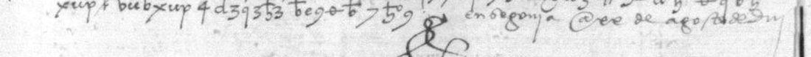
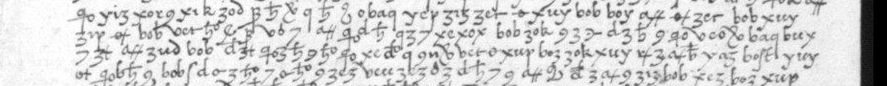

At a glanceRead in part · every code group, about half the letter signs
- The letter
- Queen Isabella to her ambassador in England, Hernán Duque de Estrada, Segovia, 20 August 1503, with duplicates of September and 3 October.
- Where
- Archivo General de Simancas, Patronato Real leg. 53 doc. 69, formerly Tratados con Inglaterra leg. 4 ff. 65–67, on PARES. Bergenroth calendared it in 1862 as a despatch he could not decipher.
- The cipher
- A homophonic alphabet, with several signs for each vowel, together with a nomenclator of two- to four-letter code groups for words.
- How it was read
- On Tomokiyo’s suggestion, with the Cifra general de los Reyes Católicos printed by Galende Díaz in 1994. It fits at once, and about 480 code groups all make sense in context. The three copies were read side by side.
- What it says
- France has opened war in Naples, Aragon, Guipúzcoa and Galicia. Henry VII is bound by treaty to help defend Spain, and Estrada is to ask him for two thousand English foot. It is not about Catherine of Aragon’s marriage.
- Still open
- About half of the 154 letter-sign runs: on the 988-pixel images a sign is eight to ten pixels high. A higher-resolution copy from Simancas should let the key read the whole letter.
- Credit
- Satoshi Tomokiyo suggested the key; the key itself is Galende Díaz’s 1994 edition.
01 Where the letter is
Bergenroth cited it as S. E. T. c. I. L. 4 ff. 65, 66 and 67: Secretaría de Estado, Tratados con Inglaterra, legajo 4. That series now sits in Patronato Real, Capitulaciones con Inglaterra, leg. 53, and PARES records 2207985–2207991 are docs. 66–72, all letters of 1502–03 to Estrada. Doc. 69 (dated only “1503” in PARES) has eight images:
- images 1–2 (pencil f. 322): copy X, 46 lines and 11 on the verso, closing “en madri[d]? a … de setiembre”, endorsed by Estrada as received at Durham House on All Saints’ Day, by the ship Jorja (George): Bergenroth’s no. 380, f. 68;
- images 3–4 (f. 323): copy Y, closing “en Segovia a xx de agosto de diii”, its dorse marked “Leg. 4 f. 65”. This is Bergenroth’s no. 369;
- images 5–6: address leaves;
- images 7–8: copy Z, closing “en Segovia a tres de otubre de diii”, endorsed “en la casa de Durã[m] a ocho de março de diiii. Recebida de uno de Salusbery”: Bergenroth’s no. 381, f. 69. Tomokiyo listed it under 3 October and noticed it was not in Estrada’s usual cipher.
The three copies begin with the same words and carry the same text with different line breaks. Isabella’s letter of 3 October in Estrada’s cipher (Bergenroth no. 385, now PTR 53/71–72) explains Z: “in case you may not have received [our letters of 20 August], I have ordered that the duplicate of it should be sent to you along with this letter.” Bergenroth calendared no. 380 (f. 68) as Isabella’s 3 October letter on the ratification of the marriage treaty, “deciphered by the editor”, and no. 381 (f. 69) as “the same despatch”. The leaves carry the August text in the other cipher, so he must have deciphered the ratification letter from its other copies (ff. 74–77) and filed these two duplicates under it by their date and endorsements. The letter he could not read was in his hands three times over. That filing probably also gave the catalogue entry its subject, the marriage.

cog ya, S A B E Y S, xix el, bof rey de Francia, zok nos, R O N P I O … Image: Archivo General de Simancas, PTR leg. 53 doc. 69, image 3 (copy Y, f. 323r), via PARES.
02 The key
The Cifra general de los Reyes Católicos (Real Academia de la Historia 9/15 ff. 7–9) is printed by Juan Carlos Galende Díaz (1994, appendix doc. 1): a sign alphabet with several forms for each letter, and 683 code groups of two to four letters beginning v-, x-, y-, z-, b- and c-. It was transcribed here for the Great Captain’s letter of 1500 in BnF Espagnol 318 (esp318/keys/cifra_general.txt) and is applied here unchanged.
Bergenroth’s “two keys of cipher” is this mixture of code groups and letter signs; no second key is needed. Estrada’s usual cipher, which Bergenroth did read (Tomokiyo lists groups such as cab, gam, raf, ru), does not occur in the letter. The scribe has two habits worth knowing: the v- codes are written with a b-like v (vib Aragón, vud agora, vil ayuda), and a final z is written like a 3 (yiz los, zez por, ziz para).
03 What the letter says
From copy X, collated with Y and Z (estrada1503/reading_X.md). Code groups are in their key values, letter-sign runs in capitals, and […] marks a run not read.
1–5. Ya sabeys como el rey de Francia nos ronpió los días passados la guerra en Nápoles sin le dar causa alguna para ello; y que fezimos con él toda quanta justificación […] en el mundo pudimos para escusar la guerra, buscando todos los medios que se podían […] para ello, y nunca lo pudimos […]
7–11. […] Narbona; y agora, no contentándose con aquello, ha enbiado todo su poder por mar y por tierra a las fronteras de nuestros reynos, la mayor parte a la de Rosellón y a la otra frontera de Fuenterrabía, para nos hazer toda la guerra que pudiere en ellos; como nos ha ya rompido la guerra por el reyno de Aragón y por la provincia de Guipúzcoa, como en el reyno de Galizia con cierta armada de mar …
14–16. … de toda la flor de la gente de Francia ha fecho la mayor armada que él ha podido, y la tiene [junta] en Lenguadoque para entrar en Rosellón y fazer el daño que pudiere …
31–32. … el rey de Inglaterra, nuestro hermano, es obligado por virtud de lo […] entre nos y él de nos ayudar para [defender] lo nuestro …
37–38. … no queremos afrontar […] que se de[clare] […] por nos […] si los franceses entran en nuestros reynos; agora solamente …
Verso 2–9. … dos mil peones […] en qual tiempo se podrá […] navios […] los dichos dos mil peones … la respuesta … de manera que el rey de Inglaterra se […] los dos mil peones …
In English: the King of France broke the peace in Naples without cause, though the monarchs gave him “all the justification in the world”. He has now sent his whole power by land and sea to their frontiers, most of it against Roussillon and the rest against Fuenterrabía, and has already opened war in Aragon, Guipúzcoa and Galicia. The flower of France is gathered in Languedoc to enter Roussillon. Henry VII is bound by treaty to help defend Spain; so far the monarchs have not pressed him to declare himself, and now Estrada is to ask him for two thousand foot soldiers and ships to carry them. Lines 17–30 turn to the Spanish response (the grandees, troops, the Navarre frontier) and are too broken to paraphrase with confidence.

yiz xor xik zod P E O N E S, los dichos dos mil peones. Image: Archivo General de Simancas, PTR leg. 53 doc. 69, image 2 (copy X, f. 322v), via PARES.The check is the next letter. On 3 October Isabella wrote again, in Estrada’s usual cipher (PTR 53/71–72; a 19th-century clear copy is bound with it). It opens “Por otras nuestras cartas de veinte de agosto … habréis visto como el Rey de Francia había comenzado a nos romper la guerra … y como por entonces no queríamos afrontar al Rey de Inglaterra nuestro hermano a que se declarase por nos … hasta ver que los franceses entraban en nuestros reynos”, sends a duplicate of the August letter, and repeats the request for “dos mil peones ingleses escogidos”, adding that the French had now entered the counties of Roussillon and laid siege to Salses.
04 What remains
- Letter-sign runs: 154 stretches in
reading_X.md, about half the cipher tokens of each copy. The alphabet has several signs for each vowel, and on 988-pixel images they cannot be told apart reliably. Three copies were collated and runs that read in one copy were carried over. The next step is a higher-resolution reproduction from Simancas; with that, the printed key should read the whole letter. - Code groups: none unknown.
zer,zegandboe/bueare read with doubt in two places each. - The later notes on copy X (All Saints’ Day) and at the foot of copy Z (“a ocho de março”) are only partly legible.
Grades: the code groups are C (the key confirms them in context); the letter runs quoted above are C where they complete a word from both sides and M where marked […] or bracketed.
05 Sources
- Archivo General de Simancas, Patronato Real leg. 53 docs. 66–72, via PARES (doc. 69, doc. 72).
- G. A. Bergenroth, Calendar of State Papers, Spain i (1862), no. 369 and p. xii (British History Online).
- J. C. Galende Díaz, “La escritura cifrada durante el reinado de los Reyes Católicos y Carlos V”, Cuadernos de Estudios Medievales y Ciencias y Técnicas Historiográficas XVIII–XIX (1994), pp. 159–178, app. doc. 1.
- S. Tomokiyo, Spanish ciphers during the reign of Ferdinand and Isabella, Cryptiana (Estrada’s ciphers).
- The key as used: BnF Espagnol 318,
esp318/keys/cifra_general.txt.
Notes, profile and reading: estrada1503/ in the repository.